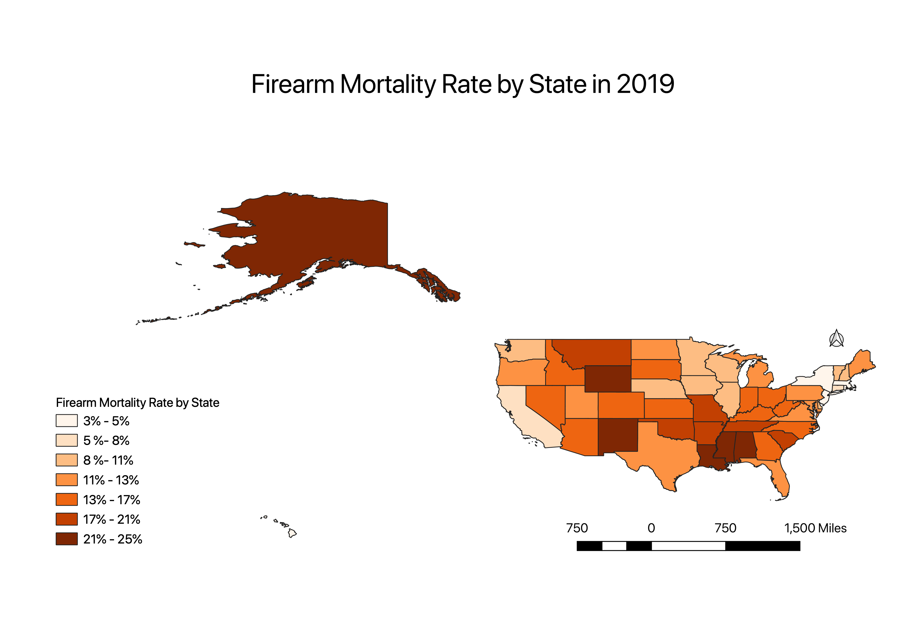

Homework 9: Firearm Mortality RateChoropleth
Julia Brazer
This map is representative of the death rate by firearms in 2019 in each state. The rate is calculated by number of deaths divided by total popultion and multiplied by 100,000. I chose this topic in light of recent gun violence issues. I was curious to see how frequent deaths like this occured and if location by state had any influence.

Data used for this project
CSV dataset
CSV Data Source
Link to Vector File